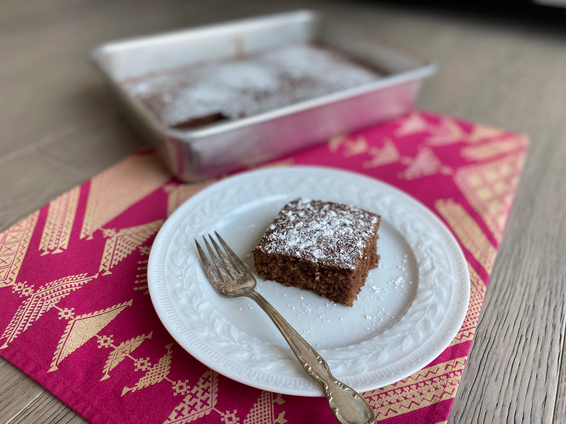

Waste Not Cake
Description
This cake uses sour milk that would otherwise be thrown out. You'd never
know it, though! It's moist, delicious, and easy to make.

Ingredients
- ¾ cup white sugar
- ½ cup unsalted butter, softened
- 2 eggs
- 1 tablespoon cocoa powder
- 1 teaspoon ground cinnamon
- 1 pinch ground cloves (Optional)
- 1 ⅔ cups all-purpose flour
- 1 cup soured milk
- ½ cup raisins
- 1 teaspoon baking soda
- 1 tablespoon boiling water
Steps
-
Preheat the oven to 350 degrees F (180 degrees C). Grease a 9x13-inch
baking dish.
-
Cream sugar and butter together in a large bowl. Beat in eggs, cocoa
powder, cinnamon, and cloves. Add flour alternately with soured milk,
stirring batter until smooth. Fold in raisins. Dissolve baking soda in
boiling water and add to the batter. Pour batter into the prepared
baking dish.
-
Bake in the preheated oven until a skewer inserted into the center comes
out clean, 30 to 35 minutes. Cool before slicing.